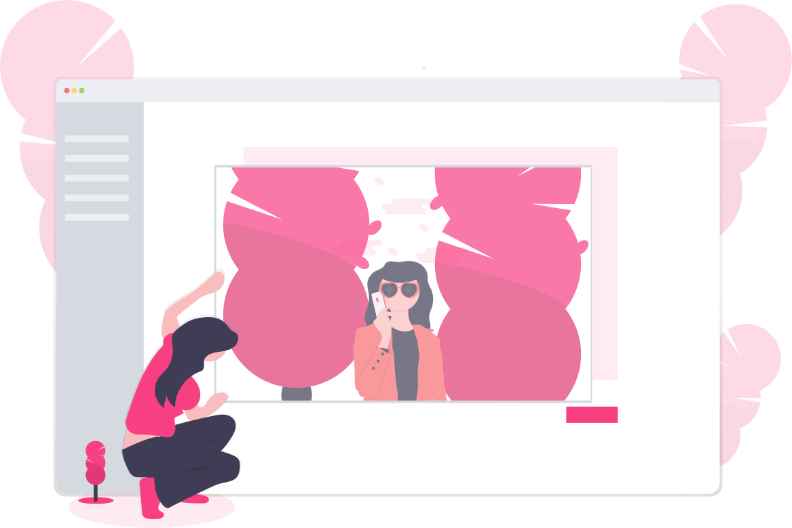

A simple way to take a screenshot of a website by providing its URL

 Tips :
Tips :
Just call /api/screenshot api endpoint like this:
/api/screenshot?url=https://vms2.terasp.net
( If your url contains parameters you should url encode it )
/api/screenshot?url=https://vms2.terasp.net
( If your url contains parameters you should url encode it )
↓ Paste your URL below to start ↓